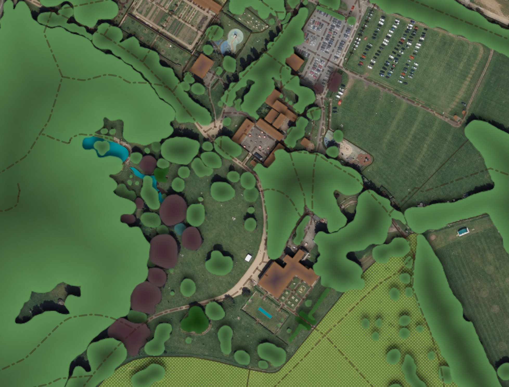
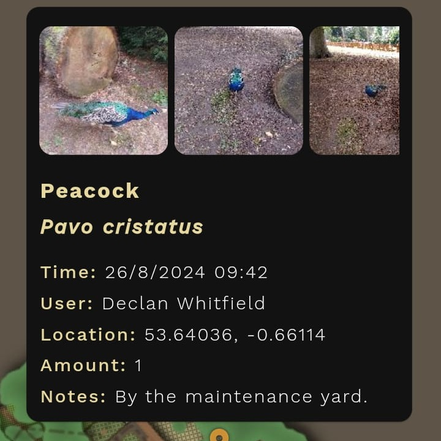

Browse our featured projects.
An interactive map of Normanby Park harnessing GIS and GPS for mobile, desktop and the web.
Features informative content about some of park's notable trees, with contributions from arboriculturist
Brad Canfield.
Trees of Normanby is an independent, third party app created in collaboration with park staff and is not currently supported by, or represent Normanby
Hall Country Park or North Lincolnshire Council.


A weird additive synthesizer that allows you to define the frequencies of all 128 MIDI notes and define
harmonic ratios with precision as decimals or fractions. A work in progress, written with
Cmajor.
Features per harmonic amplitude modulation, playable tables to visualize note mappings, customizable
value bank and explorer inspired by the Colundi value hunter allows you to build custom tunings, harmonics
table shows frequency of each harmonic in every note. On screen grid note controller, optional commands to
program sounds.

Gallery video player is an Android app designed to be used in public spaces, it restricts access to the device
so the audience are able to play and pause the video only and not navigate away. An optional title screen
image can be set, features an auto reset option that rests to the title screen or first frame of the video if
paused for a specified amount of time.
The app was made for the North Lincolnshire Council Museum team and used in the "Stubbs In The Stables"
display at Normanby Hall Country Park, part of "George Stubbs and the
Anatomy of the Horse", celebrating the 300th birthday of anatomist and painter
George Stubbs. The app was used to host a video for
Gillian Higgins from
Horses Inside Out and her making of the life size model on
display.
Some tools I've made to extend the functionality of Renoise. Includes a preset handler, instrument creator, scale creator and more.
Examples of some music I made that's on the web.

Ultradian7 is an independent creator with roots in music. The name Ultradian refers to an ultradian rhythm which "is a recurrent period or cycle repeated throughout a 24-hour day."
The number 7 is the number of days in a week or cycles of a "circadian" rhythm within which ultradian cycles recur, is often associated with luck, completeness and creativity, connected to the seven wonders of the ancient world, the 7 colours of the rainbow as divided by Isaac Newton. The magic number 7 holds reference to the human brain tending to remember about 7 items in short-term memory.
Explore Normanby Park through an interactive map for mobile, desktop and web.
Meticulous hand drawing and digitisation techniques have been used to produce an original geographically accurate map with natural human feel.
The map has been rendered into thousands of map tiles at different zoom levels, the app references coordinates in the filenames to display the correct parts of the map when required.
The app serves as a useful visitor map displaying attractions, facilities and paths. The app works with your devices GPS to display your location so you can follow the map directly as you move through the park. A search function helps you find locations and trees.
The app highlights and delivers specialist information on trees notable for rarity, age and size. Arboriculturist and park staff member Brad Canfield has collaborated in cataloging the trees and has produced high quality, informative content.
A wildlife sighting feature enables users to log wildlife sightings in the park, the data and images can be viewed by other users in the app.
Save locations on your own map with a name, description, images and marker colour. Visitors can record memories of their visits, favourite plants or scenes they viewed. Staff can utilise for visualisation in event planning and delivery, mapping out key points, staff and vendor positioning.
The park has poor network coverage so the app has been developed to handle intermittent data connections using caching strategies whilst allowing the app to respond to content updates.
The software package includes a web interface developed for park staff with no coding experience to insert and amend data that constitutes some of the apps content.
Trees of Normanby is an independent third party app, park staff were collaborated with during later stages of development to produce informative content. The project and app is not currently supported by, or represent Normanby Hall Country Park or North Lincolnshire Council.
Acknowledgement and thanks to Ben Buckley for his support and contribution to the apps content.
Adds support in Renoise for Sample Modulation Device presets. As Renoise only supports saving modulation devices in entire Modulation Sets .xrmo files, this tool extends functionality for users to save and load presets for individual devices, device chains or complete filter sections in new file types .xrmd, .xrmc or .xrmf, integrated to work consistently with native Renoise presets.
An on screen button controller for Renoise, ideally used with a touchscreen but can be used universally. Optional note layouts inspired by ancient mathematical magic squares, including more recent discoveries by the brilliant Jain108.

A Renoise tool that allows you to create or modify scales and tunings, supports import and export for Scala .scl files. Resulting scale is given as interval (decimal), ratio (fraction), cents, distance and frequency. You can view a full MIDI note frequency dump for a scale and given base frequency. Development stopped when I discovered Sevish's Scale Workshop, far superior software for producing scales!
Builds instruments by generating single cycle waveforms, user defines custom note frequencies for each sample and can generate and layer harmonics defined as decimal or fraction ratio. Supports importing Scala .scl files to insert octaves of frequencies with base note settings. It can auto generate phrases with pattern options, generate random set of frequencies from your pre set value bank. Settings for default sample options, automatically insert modulation devices.
A calculator for nine types of frequency related calculations. Results can be used can be used to automatically set Renoise sample options and device parameters.
Some music I've made has been shared here, many tracks have been made private or removed, if you're looking for a track that was previously available you can contact me. Here's another page I created to upload old music from when I first started doing electronic music.
My track appears on Dopodomani, a compilation of
electronic music curated by David Galea (umbromaniii).
Released by Jake Fields (Dr. Doctor) and the
E.L.M. Collective.
"Dopodomani is released in the spirit of friendship, generosity, and charity. The charity that we
selected was Hunger Relief International, because feeding the poor around the world is so important.
www.hungerreliefinternational.org"
My track appears on
Nature of Chaos Vol. II, an
E.L.M.C. compilation mastered by Jake Fields (Dr. Doctor) featuring artwork by Ian Anderson (Designers Republic).
"We present to you 31 tracks from 31 different artists all over the world. All proceeds from this album
will be donated to the WHO COVID-19 Response fund."
"The steelworks you are about to see takes from the earth five million tons of stone a year, and makes from it one million four hundred thousand tons of steel"
An ambient track I produced appears on Time Before The Moon, an E.L.M.C. compilation, mastered by Jake Fields (Dr. Doctor) artwork produced by Nicolas Silesi.
I contributed music to Colundi Every0ne (An Enchantment Of Sonic Spells), compiled by Grant Wilson-Claridge. Made up of tracks based on Colundi values, "128 resonant frequencies chosen via experimentation and philosophy, each relating to a specific human bio-resonance, or psychology, traditional mysticism or belief, physics, astronomy, maths, chemistry”.